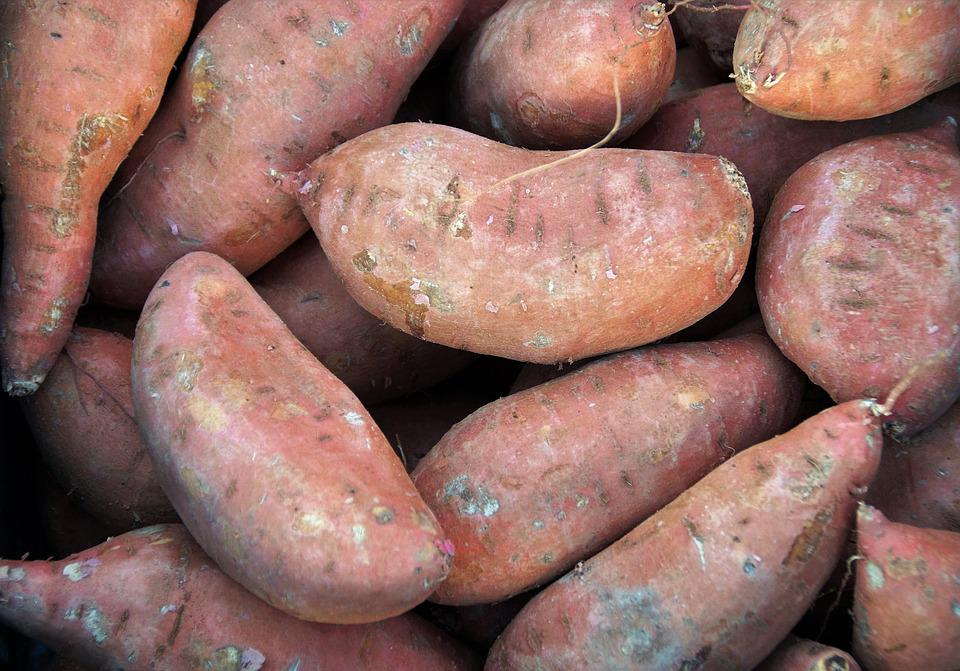
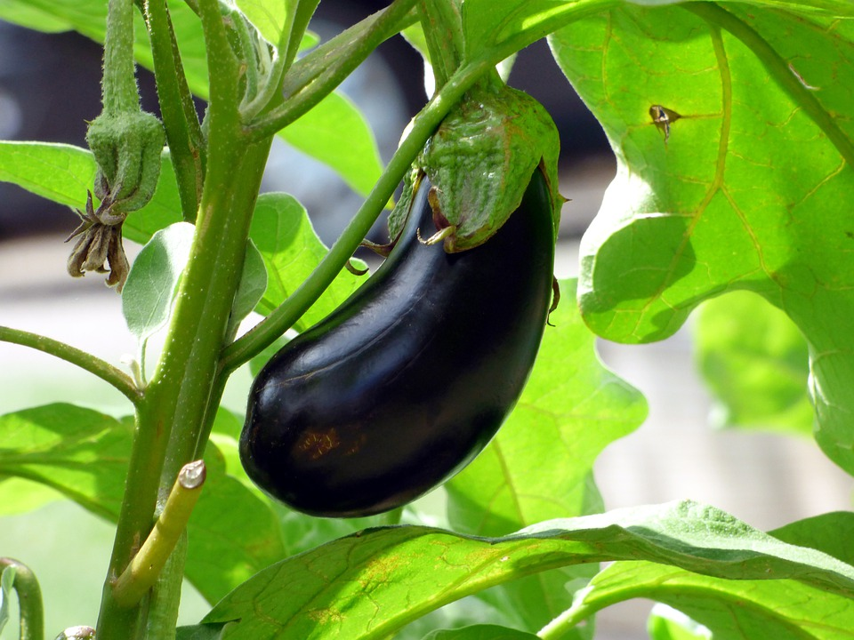
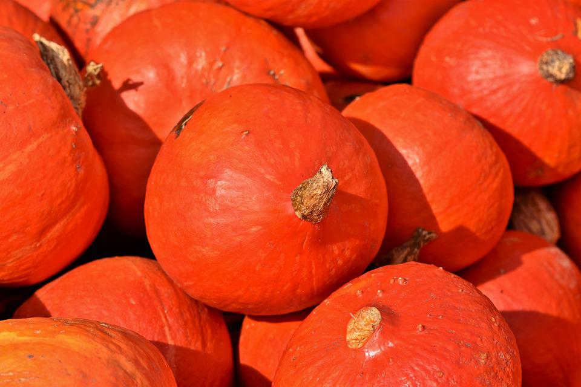
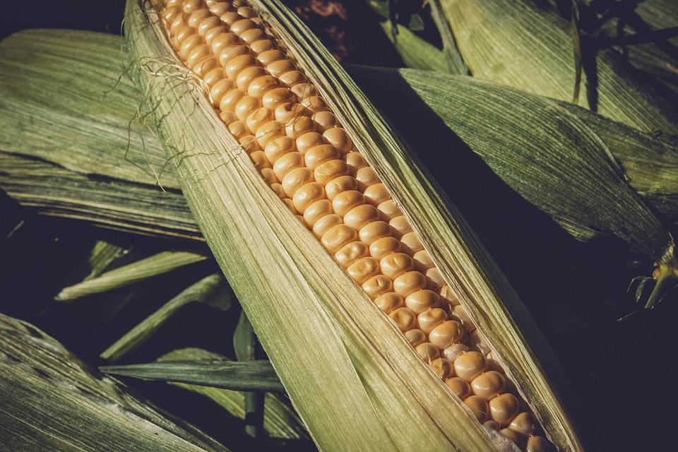
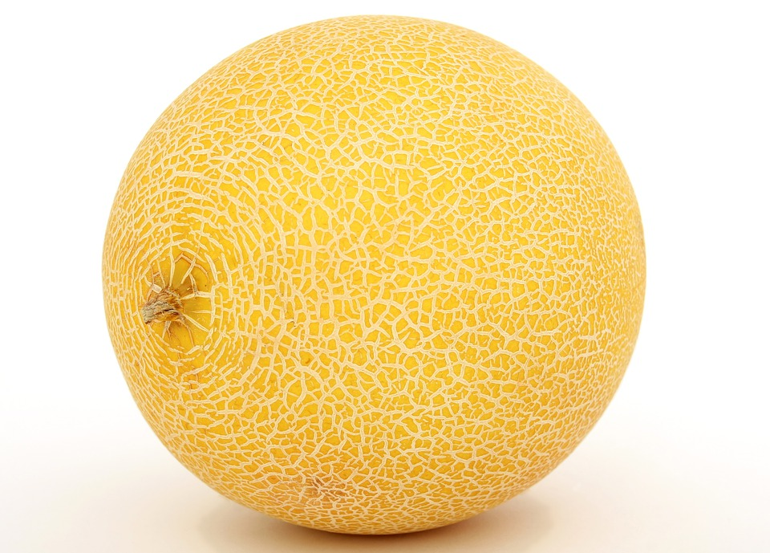
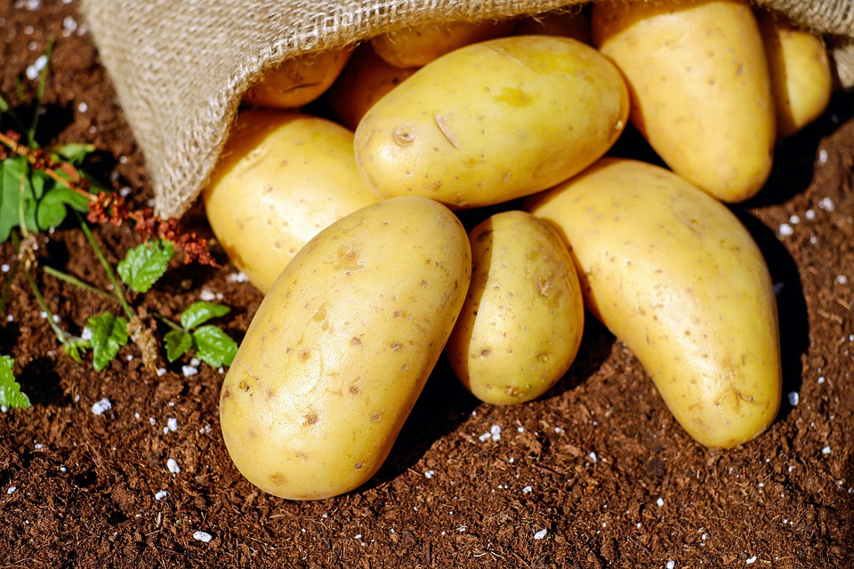
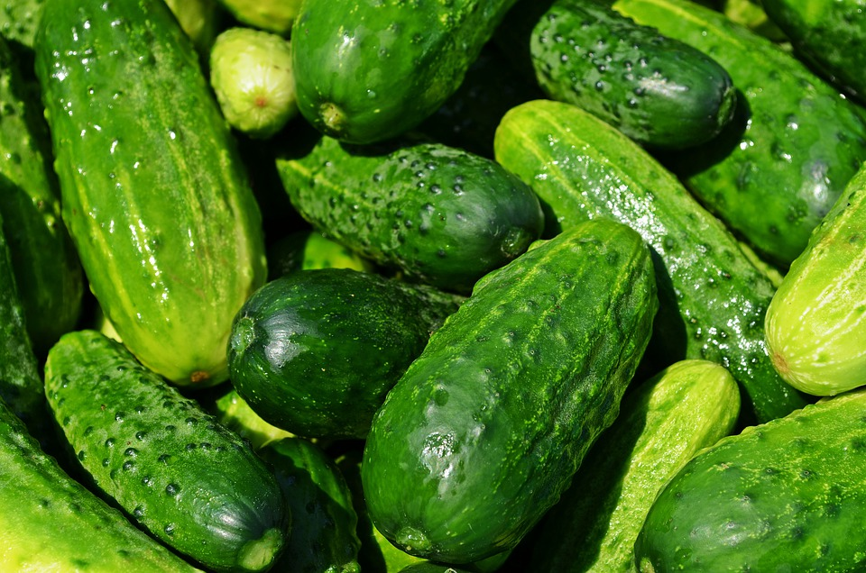
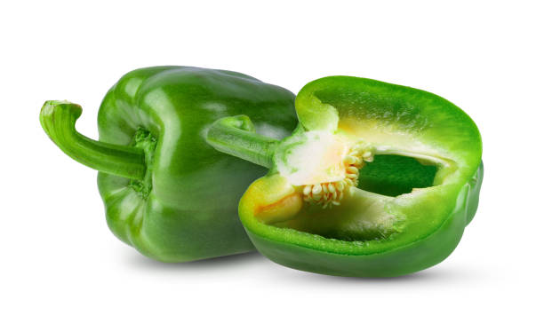

Albahaca
- forma de siembra: almácigo (set)
- transplante: octubre-noviembre
- Asociación benefica: Tomates, pimientos, espárragos
- Asociación dañina:Ruda, salvia
Batata
- forma de siembra: almácigo(ago)
- transplante: octubre
- Asociación benefica: cebollas, calabaza, yuca, tomates, pepinos
Berenjena

- forma de siembra: almácigo(ago-set)
- transplante: octubre-noviembre
- Asociación benefica: Ajo, apio, borraja, cebolla, col, escarola, espinaca, judía, lechuga, patata, puerro, rábano, zanahoria.
- Asociación dañina:Pepino
Calabaza
- forma de siembra: directa a golpes(oct-nov)
- Asociación benefica: Maíz, melón, calabacín.
- Asociación dañina: papa
Maiz dulce

- forma de siembra: directa a golpes(oct-dic)
- Asociación benefica: Papa, habas, guisantes, calabaza, pepino y calabacín.
- Asociación dañina: tomate
Melón
- forma de siembra: directa a golpes(oct)
- Asociación benefica: Cebolla, arveja, lechuga, maíz
Papa

- forma de siembra: directa (ago) directa (feb)
- Asociación benefica: Berenjena, repollo, haba, poroto verde, maíz, puerro, rábano, zanahoria
- Asociación dañina: Apio, pepino, pimiento, tomate
Pepino
- forma de siembra: directa a golpes(oct)
- Asociación benefica: Ajo, albahaca, apio, borraja, cebolla, repollo, espárrago, arveja, poroto verde, lechuga, maíz, nabo, rábano, remolacha
- Asociación dañina: berenjena, patata, tomate.
Pimiento

- forma de siembra: almácigo (jul-ago)
- transplante: octubre
- Asociación benefica:Acelga, ajo, albahaca, repollo, espinaca, arveja, poroto verde, lechuga, puerro, rábano.
- Asociación dañina: Patata.
volver